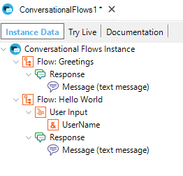
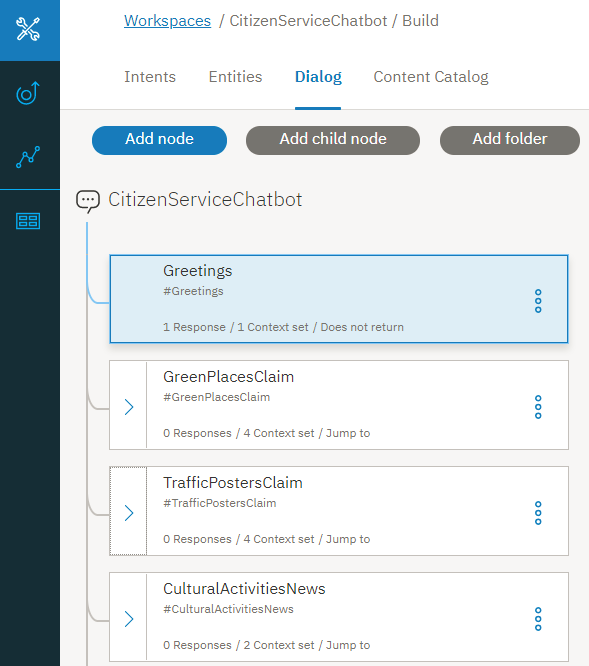

The Flow node is the main element of Conversational Flows object. It's associated to an intent of the conversation. Greetings and Hello World are Flows generated automatically when you define a new Conversational Flows instance.  The Flow node has two main children: You can add multiple Flow nodes. This node is mapped to the Artificial Intelligence provider as the representation of an intent. In Watson, you can see the Dialog defined in the Watson workspace. Each Flow of the Conversational Flows instance is represented by a node in the Dialog.  See also
|